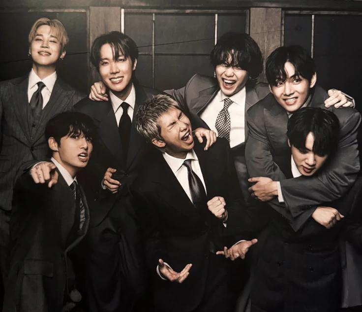
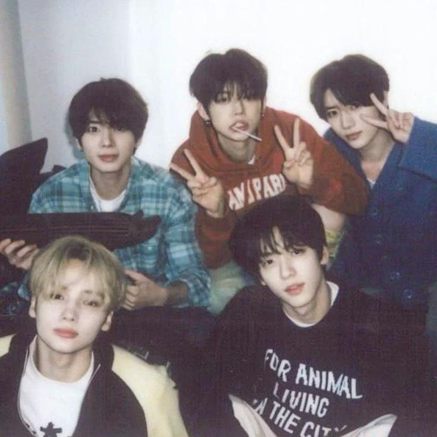
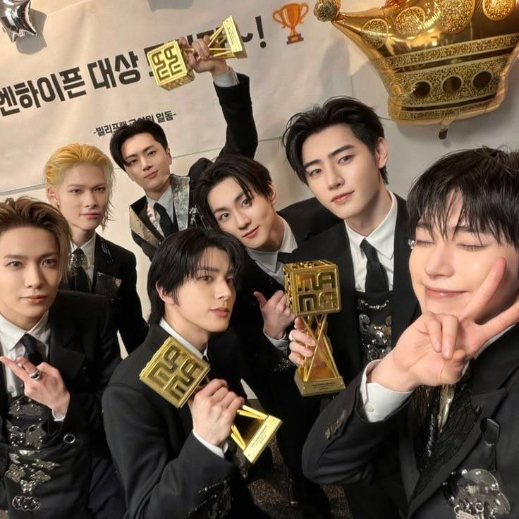
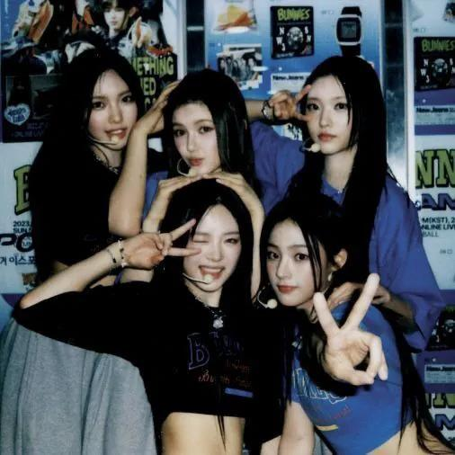
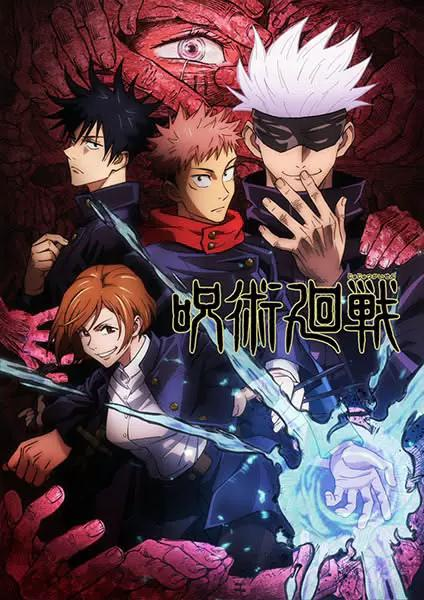
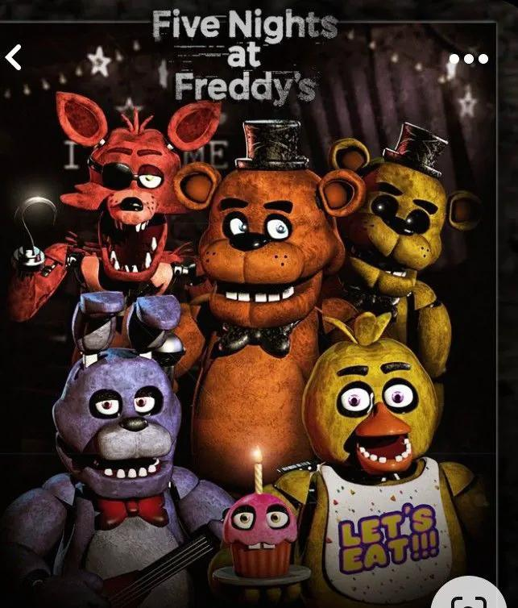
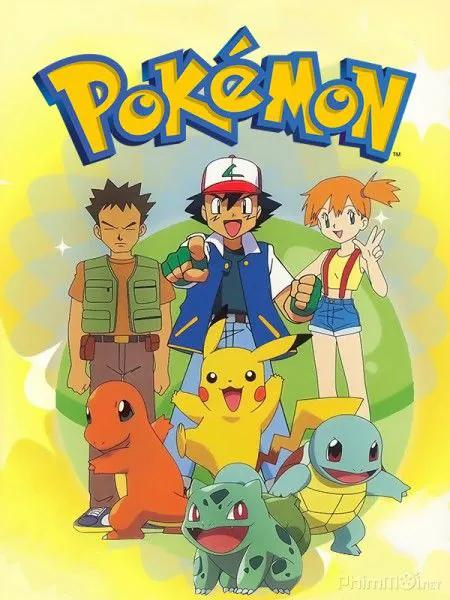
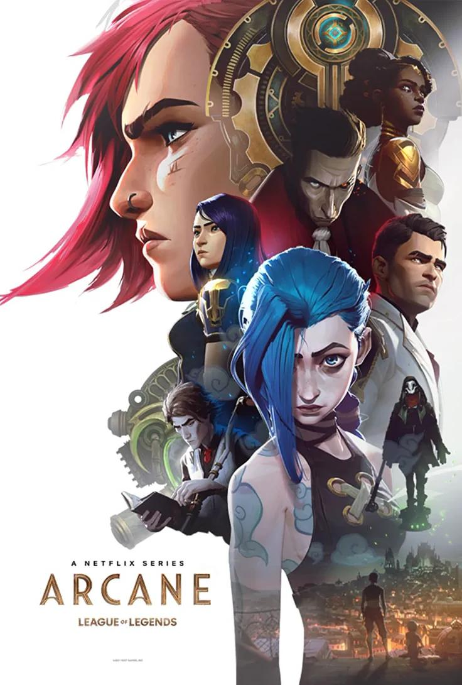
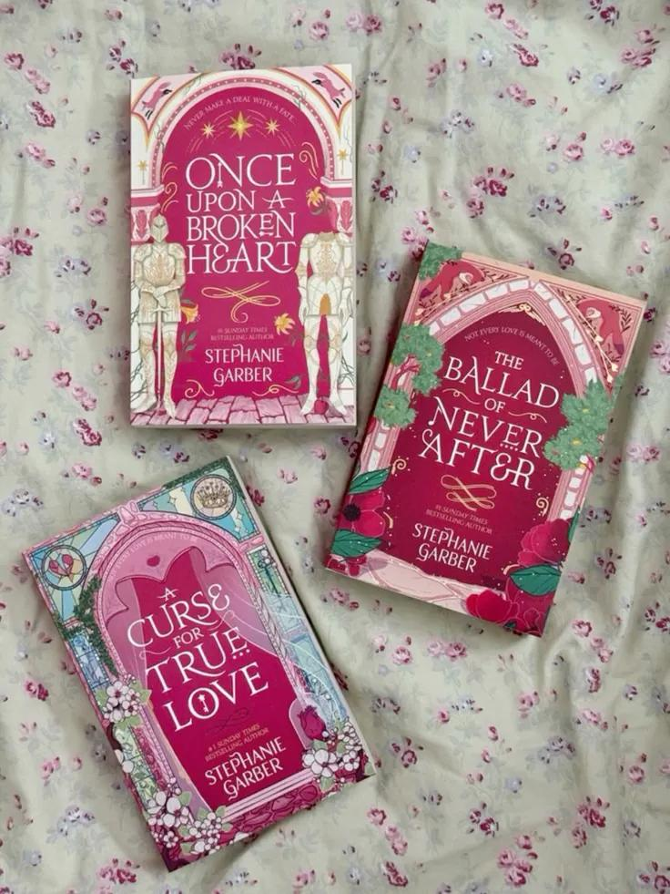
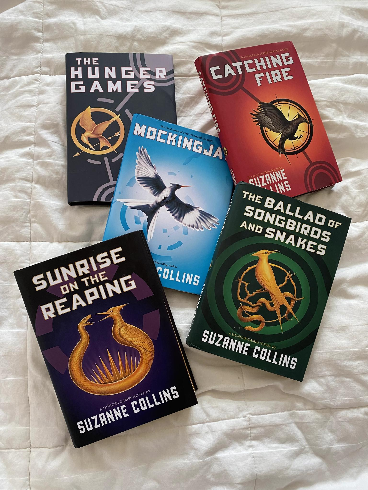

Beginning (j-hope first appears with an amazing breakdance and every member come one by one and magically synchronize with the choreo)
No more dream
N.O
If I ruled the world
Attack on Bangtan
Boy in Luv
Jump
Just one day
Danger
War of Hormone
Hip hop phile
Wake up
Ddaeng
Interlude (break for the members to rest a little bit, like 15 to 30 mins, while there's a video running on the big screens)
I need u
Boyz with fun
Run
House of cards
Baepsae
FYA (transition into)
Burning up (Fire)
Blood, Sweat & Tears
21st century girl
Interlude (break for the members to rest a little bit, like 15 to 30 mins, while there's a video running on the big screens)
MIC Drop
Pied Piper
FAKE LOVE (transition into)
Black Swan
Anpanman
So what
134340
IDOL
ON
Interlude (break for the members to rest a little bit, like 15 to 30 mins, while there's a video running on the big screens)
Normal
They dont know 'bout us
Like animals
Into the sun
The End